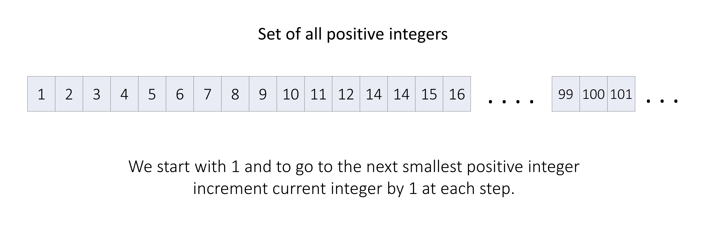

1 / 19
We have a set of all positive integers (a set will always contain unique elements). Now say this problem statement
had only one method popSmallest(), then, we could have just kept one data structure (an array) and
inserted 1000 numbers from 1 - 1000 in it in increasing order, and while calling this
method we will just move our index pointer from left to right by 1.
But we know that the lowest positive integer is 1 and with each pop we move to the next positive integer
which will be one larger than the previous, thus instead of using an additional array we can use one integer
variable currentInteger initialized to 1 (denoting the smallest positive integer), and
with each method call, we will return the current smallest integer and increment currentInteger by
1 (we move to the next greater positive integer).

But here we are also given one more method addBack(num), which will insert an integer back into our set
(if the integer num is already present in our set then it won't do anything).
We can keep a separate space (another data structure) for re-added integers. We only need to keep only integers
smaller than currentInteger in this data structure. That way, if the data structure is not empty, then
the smallest available integer will surely be in it.
We need to insert some numbers and always keep track of the smallest number among them, we could use an array and sort it again and again after each insert, but it will be very inefficient. Instead, we can use a min-heap data structure here.
A min-heap is a specialized tree-based data structure that is used to efficiently maintain and retrieve the minimum element from a collection of elements. A heap is typically implemented as a binary tree, where each node in the tree represents an element in the collection.
If you are new to this data structure then we recommend you visit our Heap Explore Card for a better understanding.
But our heap will not support insertions of only unique elements (for example, if addBack is called with
the same number multiple times in a row), thus we will need an additional data structure to check already inserted
elements and not insert them again in the heap. We can use a hash set for this.
To summarize, we will use an integer variable currentInteger which tracks the largest integer if we do
not have addBack, and a min-heap addedInteger plus a hash set isPresent to
handle numbers that get added back.
Initialize some variables:
isPresent, a hash set to store the removed numbers added again.addedIntegers, a min-heap priority queue to store the minimum of all added numbers on the
top.
currentInteger, an integer variable initialized to 1, used to denote the
current minimum value number in the set of all positive numbers.
In the popSmallest() method:
addedIntegers, then the minimum number
present in it is the answer. We remove it from the min-heap and the hash set isPresent.
currentInteger is our answer, and then we
increment currentInteger by 1 which denotes we removed the previous number and
moved to the next number in our set of all positive numbers.
answer.In the addBack(num) method:
currentInteger
<= num or num is in isPresent.
addedIntegers and hash set isPresent.
Java
class SmallestInfiniteSet {
private HashSet isPresent;
private PriorityQueue addedIntegers;
private Integer currentInteger;
public SmallestInfiniteSet() {
isPresent = new HashSet<>();
addedIntegers = new PriorityQueue<>();
currentInteger = 1;
}
public int popSmallest() {
int answer;
// If there are numbers in the min-heap,
// top element is lowest among all the available numbers.
if (!addedIntegers.isEmpty()) {
answer = addedIntegers.poll();
isPresent.remove(answer);
}
// Otherwise, the smallest number of large positive set
// denoted by 'currentInteger' is the answer.
else {
answer = currentInteger;
currentInteger += 1;
}
return answer;
}
public void addBack(int num) {
if (currentInteger <= num || isPresent.contains(num)) {
return;
}
// We push 'num' in the min-heap if it isn't already present.
addedIntegers.add(num);
isPresent.add(num);
}
}
C++
class SmallestInfiniteSet {
unordered_set isPresent;
priority_queue, greater> addedIntegers;
int currentInteger;
public:
SmallestInfiniteSet() {
// The positive integer set's first element will be 1.
currentInteger = 1;
}
int popSmallest() {
int answer;
// If there are numbers in the min-heap,
// top element is lowest among all the available numbers.
if (!addedIntegers.empty()) {
answer = addedIntegers.top();
isPresent.erase(answer);
addedIntegers.pop();
}
// Otherwise, the smallest number of large positive set
// denoted by 'currentInteger' is the answer.
else {
answer = currentInteger;
currentInteger += 1;
}
return answer;
}
void addBack(int num) {
if (currentInteger <= num ||
isPresent.find(num) != isPresent.end()) {
return;
}
// We push 'num' in the min-heap if it isn't already present.
addedIntegers.push(num);
isPresent.insert(num);
}
};
Python3
class SmallestInfiniteSet:
def __init__(self):
self.is_present: {int} = set()
self.added_integers: [int] = []
self.current_integer = 1
def popSmallest(self) -> int:
# If there are numbers in the min-heap,
# top element is lowest among all the available numbers.
if len(self.added_integers):
answer = heapq.heappop(self.added_integers)
self.is_present.remove(answer)
# Otherwise, the smallest number of large positive set
# denoted by 'current_integer' is the answer.
else:
answer = self.current_integer
self.current_integer += 1
return answer
def addBack(self, num: int) -> None:
if self.current_integer <= num or num in self.is_present:
return
# We push 'num' in the min-heap if it isn't already present.
heapq.heappush(self.added_integers, num)
self.is_present.add(num)
JavaScript
let SmallestInfiniteSet = function() {
this.isPresent = new HashSet();
this.addedIntegers = new MinHeapPQ();
this.currentInteger = 1;
};
SmallestInfiniteSet.prototype.popSmallest = function() {
// If there are numbers in the min-heap,
// top element is lowest among all the available numbers.
if (!this.addedIntegers.isEmpty()) {
answer = this.addedIntegers.popMin();
this.isPresent.remove(answer);
}
// Otherwise, the smallest number of large positive set
// denoted by 'current_integer' is the answer.
else {
answer = this.currentInteger;
this.currentInteger += 1;
}
return answer;
};
SmallestInfiniteSet.prototype.addBack = function(num) {
if (this.currentInteger <= num || this.isPresent.contains(num)) {
return;
}
// We push 'num' in the min-heap if it isn't already present.
this.addedIntegers.insert(num);
this.isPresent.add(num);
};
// === MIN HEAP PRIORITY QUEUE CLASS === //
class MinHeapPQ {
constructor() {
this.heap = [];
}
// Helper methods to get parent, left and right child indices
getParentIndex(index) {
return Math.floor((index - 1) / 2);
}
getLeftChildIndex(index) {
return 2 * index + 1;
}
getRightChildIndex(index) {
return 2 * index + 2;
}
// Helper method to swap two elements in the heap
swap(index1, index2) {
[this.heap[index1], this.heap[index2]] = [this.heap[index2], this.heap[index1]];
}
// Helper method to get the minimum element in the heap
peek() {
if (this.heap.length === 0) {
throw new Error("Heap is empty");
}
return this.heap[0];
}
// Helper method to insert an element into the heap
insert(value) {
this.heap.push(value);
let currentIndex = this.heap.length - 1;
let parentIndex = this.getParentIndex(currentIndex);
while (currentIndex > 0 && this.heap[currentIndex] < this.heap[parentIndex]) {
this.swap(currentIndex, parentIndex);
currentIndex = parentIndex;
parentIndex = this.getParentIndex(currentIndex);
}
}
// Helper method to remove the minimum element from the heap
popMin() {
if (this.heap.length === 0) {
throw new Error("Heap is empty");
}
const min = this.heap[0];
const last = this.heap.pop();
if (this.heap.length > 0) {
this.heap[0] = last;
let currentIndex = 0;
let leftChildIndex = this.getLeftChildIndex(currentIndex);
let rightChildIndex = this.getRightChildIndex(currentIndex);
while (
(leftChildIndex < this.heap.length && this.heap[leftChildIndex] < this.heap[currentIndex]) ||
(rightChildIndex < this.heap.length && this.heap[rightChildIndex] < this.heap[currentIndex])
) {
const smallerChildIndex = (rightChildIndex >= this.heap.length ||
this.heap[leftChildIndex] < this.heap[rightChildIndex]) ? leftChildIndex : rightChildIndex;
this.swap(currentIndex, smallerChildIndex);
currentIndex = smallerChildIndex;
leftChildIndex = this.getLeftChildIndex(currentIndex);
rightChildIndex = this.getRightChildIndex(currentIndex);
}
}
return min;
}
// Helper method to get the size of the heap
size() {
return this.heap.length;
}
// Helper method to check if the heap is empty
isEmpty() {
return this.heap.length === 0;
}
}
// === HASH SET CLASS === //
class HashSet {
constructor() {
this.hash = {};
this.size = 0;
}
add(value) {
if (!this.contains(value)) {
this.hash[value] = true;
this.size++;
}
}
remove(value) {
if (this.contains(value)) {
delete this.hash[value];
this.size--;
}
}
contains(value) {
return this.hash.hasOwnProperty(value);
}
getSize() {
return this.size;
}
isEmpty() {
return this.size === 0;
}
clear() {
this.hash = {};
this.size = 0;
}
}
Swift
class SmallestInfiniteSet {
var isPresent: Set
var addedIntegers: MinHeapPQ
var currentInteger: Int
init() {
isPresent = Set()
addedIntegers = MinHeapPQ()
currentInteger = 1
}
func popSmallest() -> Int {
// If there are numbers in the min-heap,
// top element is lowest among all the available numbers.
var answer: Int
if !addedIntegers.isEmpty() {
answer = addedIntegers.popMin()!
isPresent.remove(answer)
}
// Otherwise, the smallest number of large positive set
// denoted by 'current_integer' is the answer.
else {
answer = currentInteger
currentInteger += 1
}
return answer
}
func addBack(_ num: Int) {
if currentInteger <= num || isPresent.contains(num) {
return
}
// We push 'num' in the min-heap if it isn't already present.
addedIntegers.insert(value: num)
isPresent.insert(num)
}
}
// === MIN HEAP PRIORITY QUEUE CLASS === //
class MinHeapPQ {
var heap: [T] = []
// Helper methods to get parent, left and right child indices
func getParentIndex(_ index: Int) -> Int {
return (index - 1) / 2
}
func getLeftChildIndex(_ index: Int) -> Int {
return 2 * index + 1
}
func getRightChildIndex(_ index: Int) -> Int {
return 2 * index + 2
}
// Helper method to swap two elements in the heap
func swap(_ index1: Int, _ index2: Int) {
(self.heap[index1], self.heap[index2]) = (self.heap[index2], self.heap[index1])
}
// Helper method to get the minimum element in the heap
func peek() -> T? {
if self.heap.count == 0 {
return nil
}
return self.heap[0]
}
// Helper method to insert an element into the heap
func insert(value: T) {
self.heap.append(value)
var currentIndex = self.heap.count - 1
var parentIndex = self.getParentIndex(currentIndex)
while currentIndex > 0 && self.heap[currentIndex] < self.heap[parentIndex] {
swap(currentIndex, parentIndex)
currentIndex = parentIndex
parentIndex = self.getParentIndex(currentIndex)
}
}
// Helper method to remove the minimum element from the heap
func popMin() -> T? {
if heap.isEmpty {
return nil
}
let min = heap[0]
let last = heap.removeLast()
if !heap.isEmpty {
heap[0] = last
var currentIndex = 0
var leftChildIndex = getLeftChildIndex(currentIndex)
var rightChildIndex = getRightChildIndex(currentIndex)
while leftChildIndex < heap.count &&
(heap[leftChildIndex] < heap[currentIndex] ||
(rightChildIndex < heap.count && heap[rightChildIndex] < heap[currentIndex]
)
) {
let smallerChildIndex = rightChildIndex < heap.count &&
heap[rightChildIndex] < heap[leftChildIndex] ? rightChildIndex : leftChildIndex
swap(currentIndex, smallerChildIndex)
currentIndex = smallerChildIndex
leftChildIndex = getLeftChildIndex(currentIndex)
rightChildIndex = getRightChildIndex(currentIndex)
}
}
return min
}
func size() -> Int {
return heap.count
}
func isEmpty() -> Bool {
return heap.isEmpty
}
}
Here, nn
is the number addBack(num) and mm is the number of popSmallest()
method calls.
Time complexity: O((m+n)⋅logn)O((m + n) \cdot \log n)
In each popSmallest() method call, in the worst case, we will need to remove a number
from the hash set which will take O(1)O(1)
time, and the top of the min-heap which will take O(logn)O(\log n)
time. Thus, for mm calls it will take O(m⋅logn)O(m \cdot \log n)
time.
In each addBack(num) method call, we might push num in the hash set which
will take O(1)O(1)
time and min-heap which will take O(logn)O(\log n)
time. Thus, for nn calls it will take O(n⋅logn)O(n \cdot \log n)
time.
Space complexity: O(n)O(n)
As we discussed in the previous approach, we used a min-heap to keep track of the smallest added-back number and a hash set to insert only unique elements. We can combine the functionality of these two with an ordered set (also known as a sorted set) for this task.
A sorted set contains only unique elements with maintaining a balanced binary search tree like structure to keep the elements in sorted order. The exact implementation might differ in each language.
Initialize some variables:
addedIntegers, a sorted set to store added numbers in increasing order.currentInteger, an integer variable initialized to 1, used to denote the
current minimum value number in the set of all positive numbers.
In the popSmallest() method:
addedIntegers, then the minimum number
present in it is the answer. We remove it from the set.
currentInteger is our answer, and then we
increment currentInteger by 1 which denotes we removed the previous number and
moved to the next number in our set of all positive numbers.
answer.In the addBack(num) method:
addedIntegers.
Java
class SmallestInfiniteSet {
private SortedSet addedIntegers;
private Integer currentInteger;
public SmallestInfiniteSet() {
addedIntegers = new TreeSet<>();
currentInteger = 1;
}
public int popSmallest() {
int answer;
// If there are numbers in the sorted-set,
// top element is lowest among all the available numbers.
if (!addedIntegers.isEmpty()) {
answer = addedIntegers.first();
addedIntegers.remove(answer);
}
// Otherwise, the smallest number of large positive set
// denoted by 'currentInteger' is the answer.
else {
answer = currentInteger;
currentInteger += 1;
}
return answer;
}
public void addBack(int num) {
if (currentInteger <= num || addedIntegers.contains(num)) {
return;
}
// We push 'num' in the sorted-set if it isn't already present.
addedIntegers.add(num);
}
}
C++
class SmallestInfiniteSet {
set addedIntegers;
int currentInteger;
public:
SmallestInfiniteSet() {
// The positive integer set's first element will be 1.
currentInteger = 1;
}
int popSmallest() {
int answer;
// If there are numbers in the sorted-set,
// first element is lowest among all the available numbers.
if (!addedIntegers.empty()) {
answer = *addedIntegers.begin();
addedIntegers.erase(addedIntegers.begin());
}
// Otherwise, the smallest number of large positive set
// denoted by 'currentInteger' is the answer.
else {
answer = currentInteger;
currentInteger += 1;
}
return answer;
}
void addBack(int num) {
if (currentInteger <= num ||
addedIntegers.find(num) != addedIntegers.end()) {
return;
}
// We push 'num' in the sorted-set if it isn't already present.
addedIntegers.insert(num);
}
};
Python3
from sortedcontainers import SortedSet
class SmallestInfiniteSet:
def __init__(self):
self.added_integers = SortedSet()
self.current_integer = 1
def popSmallest(self) -> int:
# If there are numbers in the sorted-set,
# top element is lowest among all the available numbers.
if len(self.added_integers):
answer = self.added_integers[0]
self.added_integers.discard(answer)
# Otherwise, the smallest number of large positive set
# denoted by 'current_integer' is the answer.
else:
answer = self.current_integer
self.current_integer += 1
return answer
def addBack(self, num: int) -> None:
if self.current_integer <= num or num in self.added_integers:
return
# We push 'num' in the sorted-set if it isn't already present.
self.added_integers.add(num)
Here, nn
is the number addBack(num) and mm is the number of popSmallest()
method calls.
Time complexity: O((m+n)⋅logn)O((m + n) \cdot \log n)
In each popSmallest() method call, in the worst case, we will need to remove the first
element of the sorted set which will take O(logn)O(\log n)
time. Thus, for mm calls it will take O(m⋅logn)O(m \cdot \log n)
time.
In each addBack(num) method call, we might push num into the sorted set
which will take O(logn)O(\log n)
time. Thus, for nn calls it will take O(n⋅logn)O(n \cdot \log n)
time.
Space complexity: O(n)O(n)